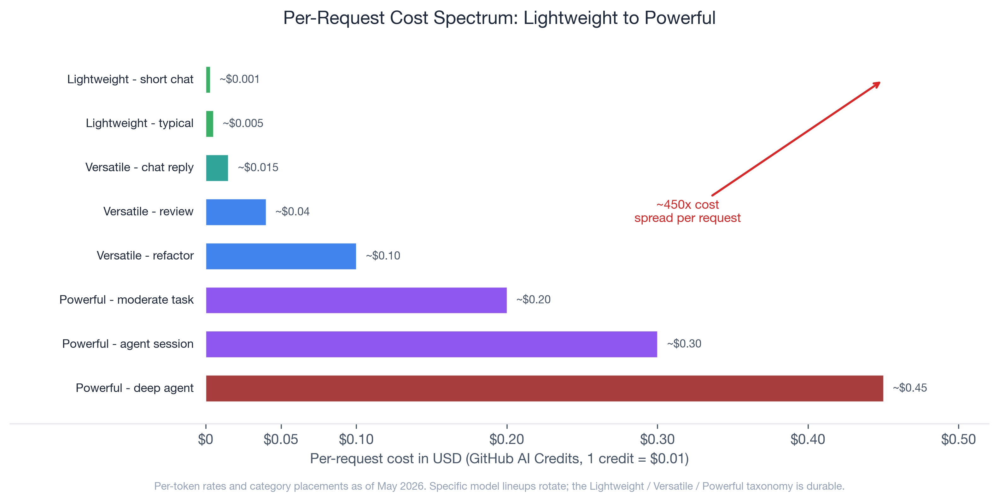
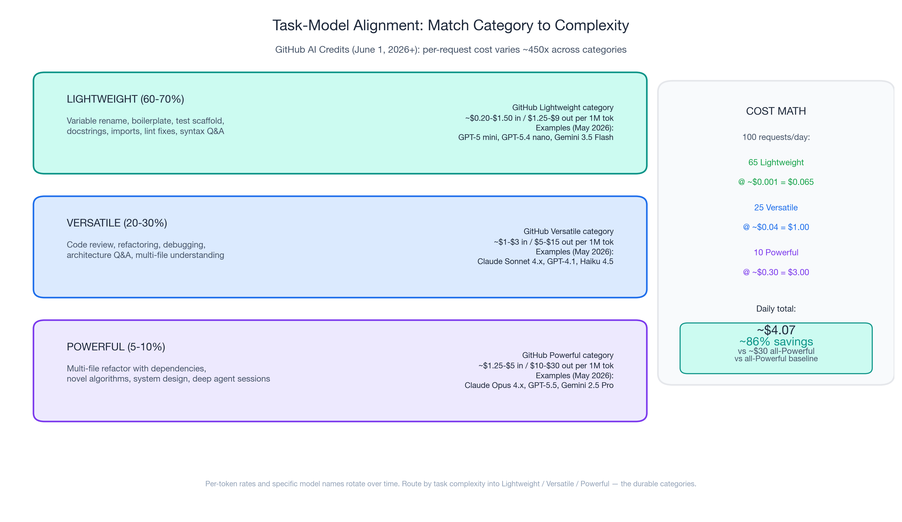
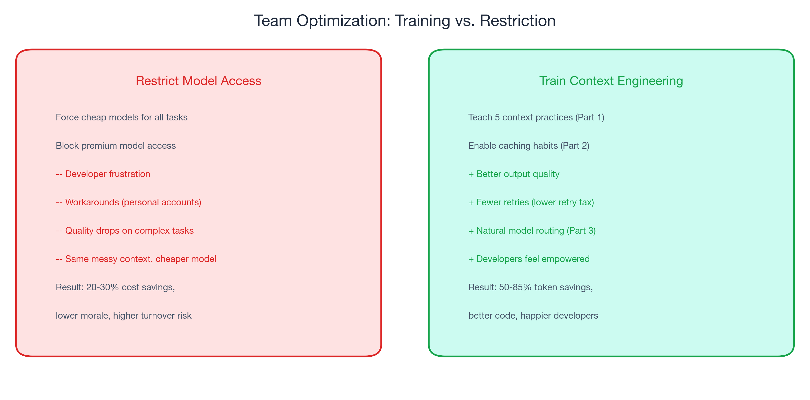
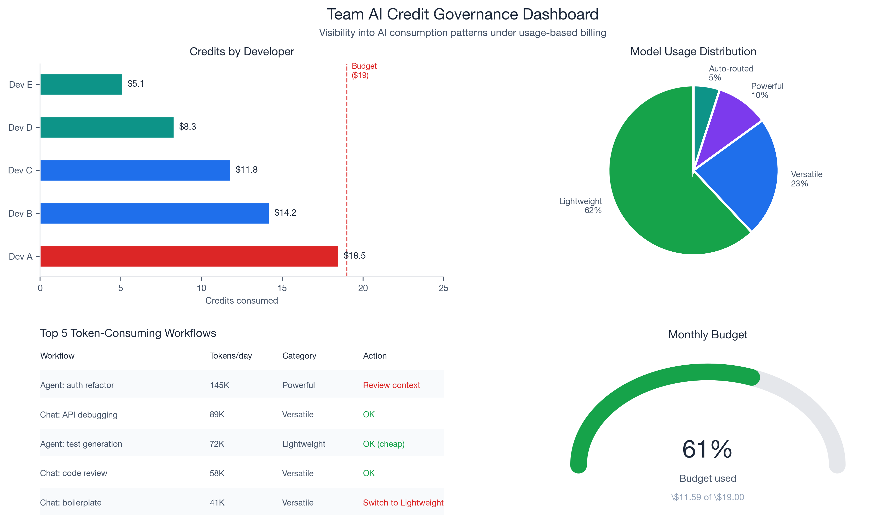
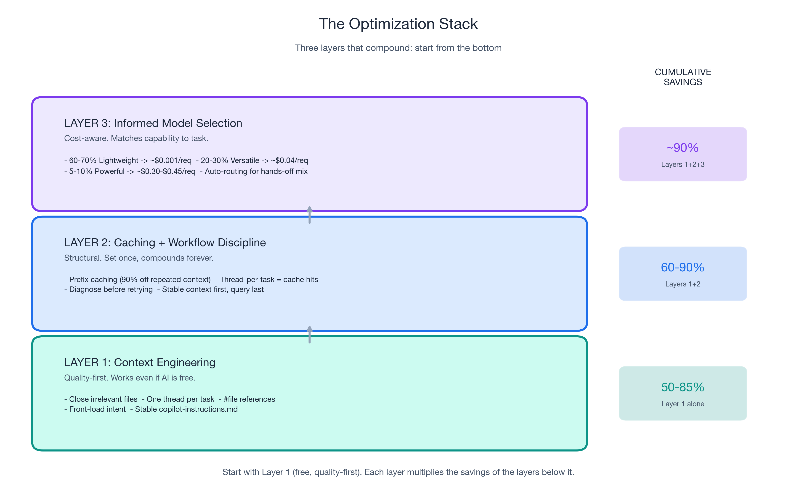

Part 3 of 3 in the "Engineering Better AI Code Assistant Interactions" series. Previously: Part 1 covered context engineering (50-85% token reduction). Part 2 covered prompt caching (75-90% reduced rate on repeated context) and workflow discipline.
What Changes on June 1, 2026: PRUs Are Gone, Tokens Are In
If you have been navigating GitHub Copilot using the model-multiplier mental model (a lightweight model costs 0.25x, a heavy reasoning model costs 3x, a flagship fast-mode tier costs 30x), that system is being retired. On June 1, 2026, GitHub Copilot replaces Premium Request Units (PRUs) with GitHub AI Credits — a token-metered system where every request is billed by the actual tokens consumed.
The headline numbers from GitHub's official announcement:
- 1 AI Credit = $0.01 USD. Token consumption is converted into credits using each model's published per-token rate.
- Plan prices do not change. Copilot Pro stays at $10/month and now includes $10 in monthly AI Credits. Pro+ stays at $39/month with $39 in credits. Business stays at $19/user/month with $19/user in credits (plus a $30/user promotional bump June-Aug). Enterprise stays at $39/user/month with $39/user in credits (plus a $70/user promotional bump June-Aug).
- Code completions and Next Edit suggestions remain unmetered on all paid plans. Chat, agent mode, multi-step coding, Spaces/Spark, code review, and any feature where you pick a model do consume credits.
- The fallback experience is going away. When PRUs ran out you were silently routed to a cheaper model and could keep working. Under AI Credits, when your pool is exhausted you either authorize additional usage at published rates or stop — admin budget controls govern overages.
- Annual Pro/Pro+ subscribers stay on PRU multipliers until their existing plan expires. The multipliers will actually increase for that group on June 1. Everyone else moves to AI Credits automatically.
- Copilot code review consumes GitHub Actions minutes on top of AI Credits, billed at standard Actions runner rates.
Why GitHub made this change: Copilot has evolved from in-editor completions to agentic platforms that run multi-step coding sessions across whole repos. A quick chat and a multi-hour autonomous coding session used to cost a user the same single PRU. That subsidy is no longer financially sustainable, and the token model makes the cost surface visible — which is exactly what you need to make sensible model-selection decisions.
Not All Tokens Are Priced Equal: The New Per-Request Cost Spread
Under the new model, the cost of an interaction is tokens_consumed × rate_per_token — and both factors vary by an order of magnitude depending on the model and the task. Here is GitHub's published pricing (per 1 million tokens, as of May 26, 2026):
| Provider | Model | Category | Input | Cached input | Output |
|---|---|---|---|---|---|
| OpenAI | GPT-5 mini | Lightweight | $0.25 | $0.025 | $2.00 |
| OpenAI | GPT-5.4 nano | Lightweight | $0.20 | $0.02 | $1.25 |
| OpenAI | GPT-4.1 | Versatile | $2.00 | $0.50 | $8.00 |
| OpenAI | GPT-5.4 | Versatile | $2.50 | $0.25 | $15.00 |
| OpenAI | GPT-5.5 | Powerful | $5.00 | $0.50 | $30.00 |
| Anthropic | Claude Haiku 4.5 | Versatile | $1.00 | $0.10 | $5.00 |
| Anthropic | Claude Sonnet 4.x | Versatile | $3.00 | $0.30 | $15.00 |
| Anthropic | Claude Opus 4.5 / 4.6 / 4.7 | Powerful | $5.00 | $0.50 | $25.00 |
| Gemini 3.5 Flash | Lightweight | $1.50 | $0.15 | $9.00 | |
| Gemini 2.5 Pro | Powerful | $1.25 | $0.125 | $10.00 |
(Anthropic models also charge a cache-write cost. The full table including Raptor mini and Goldeneye fine-tuned GitHub models lives in the docs. Specific model lineups rotate; the three categories — Lightweight / Versatile / Powerful — are GitHub's durable taxonomy.)
Translate that into per-request cost. A short chat reply (~2K input + 500 output) on GPT-5.4 nano costs about $0.001. A deep agent-mode session with rich context (~40K input + 10K output) on Claude Opus 4.7 costs about $0.45. That is a ~450x per-request cost spread between the cheapest and most expensive realistic interaction patterns — and the gap widens with longer agent sessions.
This is not a "use cheap models" story. This is a "understand when expensive models add genuine value" story.
Apple ML Research found that reasoning models burn thousands of extra tokens on simple tasks — with zero quality improvement. Standard models actually provided better accuracy on low-complexity items. The expensive model is not always the better choice, even if money is no object. And under token-based billing, those extra reasoning tokens hit your bill directly.

Matching Model Capability to Task Complexity
GitHub categorizes every Copilot model into three durable buckets: Lightweight, Versatile, and Powerful. Pair each bucket with a task profile and the credit math takes care of itself.
Lightweight (60-70% of daily interactions)
Variable renaming. Boilerplate generation. Test scaffolding. Docstring writing. Import fixing. Linting explanations. Simple chat questions about syntax or API usage.
What to pick from the Lightweight category (as of May 26, 2026): GPT-5 mini, GPT-5.4 nano, GPT-5.4 mini from OpenAI; Gemini 3 Flash (public preview) and Gemini 3.5 Flash from Google.
Concrete cost: a typical lightweight request (~2K input + 500 output) on GPT-5.4 nano is ~$0.001 — about a tenth of one AI Credit. A Pro plan's $10/month credit allowance covers roughly 10,000 such interactions.
Versatile (20-30% of daily interactions)
Code review with contextual understanding. Refactoring suggestions that span multiple functions. Debugging assistance. Architecture questions. Multi-file understanding.
What to pick from the Versatile category (as of May 26, 2026): GPT-4.1, GPT-5.4 from OpenAI; Claude Haiku 4.5, Claude Sonnet 4.x family from Anthropic. Most teams should set their default here unless they have measured a need to go higher.
Concrete cost: a typical versatile request (~5K input + 1.5K output) on Claude Sonnet 4.6 is ~$0.04 — roughly 4 AI Credits, or ~265 such interactions per $10 of credit allowance. With caching enabled (Part 2), the cached-input portion drops the cost ~10x.
Powerful (5-10% of daily interactions)
Multi-file refactoring with complex dependency chains. Novel algorithm implementation. System design with constraint satisfaction across performance, security, and maintainability. Deep architectural reasoning.
What to pick from the Powerful category (as of May 26, 2026): Claude Opus 4.5 / 4.6 / 4.7 from Anthropic; GPT-5.5, GPT-5.2-Codex, GPT-5.3-Codex from OpenAI; Gemini 2.5 Pro and Gemini 3.1 Pro (public preview) from Google.
Concrete cost: a deep agent-mode session on Claude Opus 4.7 (~40K input + 10K output) is ~$0.45 — about 45 AI Credits, or ~22 such sessions per $10 of credit allowance.
The cost math, in dollars
| Category | % of requests | Daily requests | Typical cost / request | Daily $ |
|---|---|---|---|---|
| Lightweight | 65% | 65 | $0.001 | $0.065 |
| Versatile | 25% | 25 | $0.04 | $1.00 |
| Powerful | 10% | 10 | $0.30 | $3.00 |
| Total | 100 | ~$4.07 / day |
Compared to the same 100 requests all routed to a Powerful model at ~$0.30 each ($30/day), task-aware routing cuts the bill by ~86% — while still using the Powerful category for the hardest tasks. You are not downgrading. You are matching capability to need.
Apply caching from Part 2 on top: cached input is roughly 10x cheaper than fresh input (Anthropic also adds a small cache-write cost). With a stable copilot-instructions file and disciplined thread-per-task workflow, the effective daily cost drops further to ~$1.50-2.00/day per developer — comfortably inside the Pro plan's $10/month allowance.
RouteLLM demonstrated this at scale: 95% of the flagship-model quality using only 14% flagship calls. (In the RouteLLM paper, "flagship" = GPT-4 as the 2024 LMSYS baseline; the principle generalizes to whatever the current Powerful-category leader is.) CascadeFlow achieved 69% savings with 96% quality retention. A production team profiled by Towards Data Science dropped from $3,000/day to $970/day (68% reduction, $740K/year annualized) through routing alone.

Let the Router Do the Work
For developers who do not want to manually switch models for every request, Copilot's auto model selection algorithmically routes tasks to appropriate models inside the AI Credits framework. RouteLLM achieved 95% quality at 75% cost reduction — better than most humans would achieve switching models manually. CascadeFlow delivered 69% savings with 96% quality retention. Both prove: let the system match complexity to capability.
Caveat: limited public data on Copilot's specific auto-selection algorithm and its credit-consumption profile compared to manual selection. For teams that want maximum control and predictable per-request cost, manual selection using the Lightweight / Versatile / Powerful taxonomy above is more transparent.
Clean context (Part 1) improves routing decisions. When the router gets better signal about what you are asking, it makes better model choices. Clean context improves model output and model selection.

Budget Visibility for AI Team Leads: GitHub Copilot AI Credits Governance
If you are an AI team lead or decision-maker responsible for 5-20 developers on GitHub Copilot Business or Enterprise, AI Credits introduces governance tools that did not exist under the PRU model.
New capabilities under AI Credits
- Pooled included usage across a business — instead of each user's unused credits being siloed, allowances can be pooled across the organization to eliminate stranded capacity.
- Budget controls at the enterprise, cost center, and user levels — admins set spending limits before they are hit. When the included pool is exhausted, admins choose whether to authorize additional usage at published rates or cap spend.
- Itemized usage visibility — see which developers, projects, and models consume the most credits, with the actual dollar cost attached to each.
This is the first time AI team decision-makers have had granular, dollar-denominated visibility into AI tool consumption.
Recommended team standards
- Establish default model guidelines by task category. Document your team's task taxonomy (which work is Lightweight, Versatile, or Powerful) and the recommended model category for each. Add this to your team wiki or, better yet, to your
.github/copilot-instructions.md. - Set budget alerts before June 1. Configure budget alerts at 50%, 75%, and 90% of your team's credit allocation. Set alerts relative to your expected post-September usage, not the promotional ceiling — otherwise you will get a sticker shock in October.
- Review top-consuming projects monthly. The highest consumption typically comes from agent-mode sessions and Copilot code review (which also consumes GitHub Actions minutes). Ensure they are running with clean context (Part 1) and caching-friendly structure (Part 2).
- Invest in context engineering training, not model restrictions. AI team leads who restrict model access create frustration and workarounds. AI team leads who teach context engineering get the same cost reduction — or better — with happier developers.
The framing matters for decision-makers. This is "investing in developer effectiveness," not "policing AI usage." The goal is developers who produce better code with AI assistance, not developers who use less AI.


The Complete Playbook: Three Layers, One Page
| Layer | What | Savings | "Would I do this if AI were free?" |
|---|---|---|---|
| 1: Context Engineering (Part 1) | Five practices: close files, thread hygiene, #file references, front-load intent, stable instructions | 50-85% token reduction | Yes |
| 2: Caching + Workflow (Part 2) | Prefix caching, retry elimination, structured prompts | ~10x reduced rate on cached input | Mostly |
| 3: Model Selection (Part 3) | Lightweight / Versatile / Powerful routing, auto-selection, deliberate Powerful use | ~85% on model costs (worked example) | Billing-specific |
Combined potential: ~90% effective cost reduction with better output quality than an unoptimized workflow using Powerful-category models. Start with Layer 1 (free, quality-first). Each layer multiplies the savings of the layers below it.

Start With Context, Not Cost
The developers who will thrive under usage-based billing are not the ones who switched to the cheapest model. They are the ones who learned to give AI better input.
- Apply the five context engineering practices from Part 1 this week.
- Stabilize your copilot-instructions file to enable caching (Part 2).
- Review the task taxonomy and match your default model category to your actual task mix.
The billing change is real. The urgency is valid. But the advice is durable. Better input produces better output whether you pay per token, per request, or nothing at all. Build your workflow around that principle, and the AI Credit bill takes care of itself.
← Part 1: Context Engineering | ← Part 2: Invisible Compound Savings
Sources
- GitHub Copilot usage-based billing announcement: github.blog/news-insights/company-news/github-copilot-is-moving-to-usage-based-billing
- GitHub Copilot models and pricing (per-token rates, AI Credits): docs.github.com/en/copilot/reference/copilot-billing/models-and-pricing
- GitHub Docs — multipliers for annual Pro/Pro+ subscribers (transitional): docs.github.com/copilot/reference/copilot-billing/models-and-pricing
- Apple ML Research, "The Illusion of Thinking": machinelearning.apple.com/research/illusion-of-thinking
- RouteLLM (LMSYS, 2024): lmsys.org/blog/2024-07-01-routellm
- CascadeFlow (arXiv, 2024): arxiv.org/abs/2406.00073
- Towards Data Science production case study: towardsdatascience.com inference-scaling article
Per-token rates and named model examples cited above are accurate as of May 26, 2026 and rotate as providers release new versions. GitHub's three model categories — Lightweight, Versatile, Powerful — are the durable taxonomy and the right interface for governance.